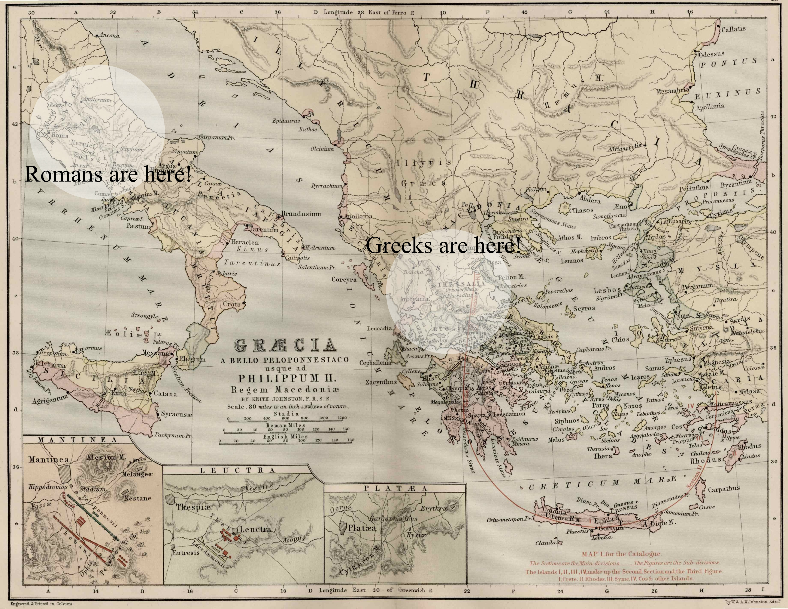
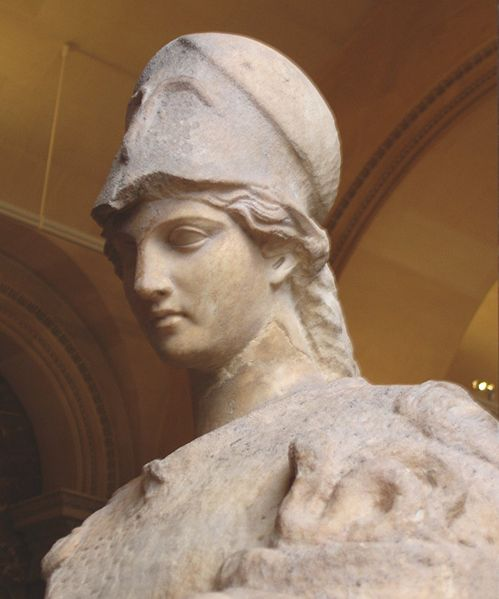
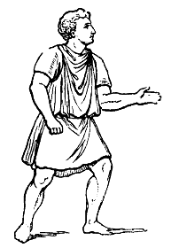
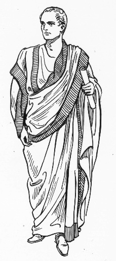
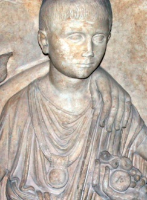
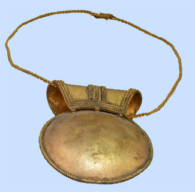
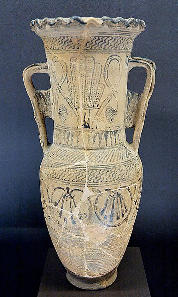

Your browser doesn't support the features required by impress.js, so you are presented with a simplified version of this presentation.
For the best experience please use the latest Chrome, Safari or Firefox browser.
What I know about the Greek and Roman citizens.
The Romans came after the Greeks.
They have similar
Clothing
Schooling
Weddings
They both have very fun cultures to learn about.
Geography!
- Rome is close to Greece.
- Romans were influenced by Greeks.
- The similarities are the evidence.
Map! THEY ARE CLOSE!!

Mythology
| Greek God | Roman God |
| Zeus | Jupiter |
| Hera | Juno |
| Apollo | Apollo |
| Artemis | Diana |
| Athena | Minerva |
| Aphrodite | Venus |
| Demeter | Ceres |
| Dionysus | Bacchus |
| Hestia | Vesta |
| Greek God | Roman God |
| Hephaestus | Vulcan |
| Ares | Mars |
| Hermes | Mercury |
| Poseidon | Neptune |
| Persephone | Proserpine |
| Cronus | Saturn |
Athena and Minerva: Twins separated at birth!

Clothing
- Men wear only white togas or tunics that reached their feet.
- Women togas or tunics have to reach their feet.
- Togas vs Tunics!
- At birth a Roman child will get a bulla.
Toga v. Tunic. FIGHT!!!


Bulla


Schooling
- The Roman and Greek children have to get up before sunrise
to go to school.
- They take naps after lunch time and before the end of school.
- They learn from scrolls.
- Older children learn grammar.
Weddings
- The bride would have to part with her prescious jewelery
and give it to her future husband.
- She would also have to give her childhood toys to her parents.
- She would have to give her bulla to her father.
- A Lourrophoros holds water for the guests at the wedding.
- The bride has to say," Quando tu Gaius, ego Gaia.
Lourrophoros

I learned about
Roman and Greek schools,
weddings,
myths,
and that Romans were influenced by Greeks.